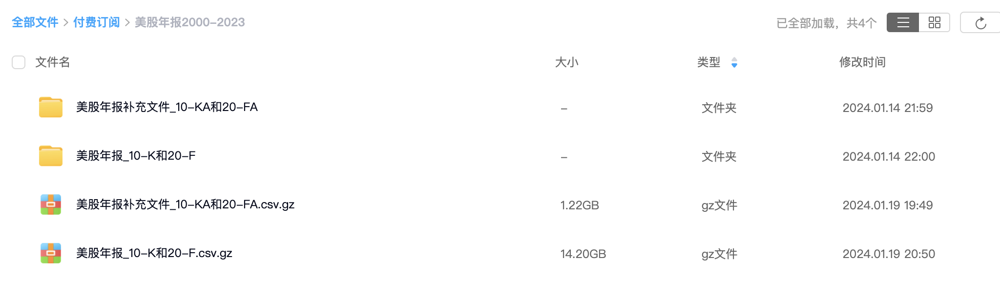
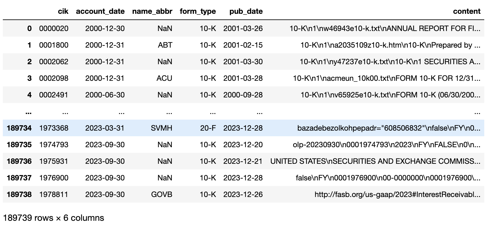

一、数据集概况
数据名称: 美股年报10-K、20-F报告
数据来源: SEC
报告类型: 10-K、20-F
公司数量: 33619
报告数量: 189739
覆盖日期: 2000-07-05 ~ 2024.01.05
数据类型: html、csv(csv是对所有html的汇总文件)
数据体积: 378G
1.1 声明
科研用途；如有问题， 请加微信372335839，备注「姓名-学校-专业」
1.2 格式说明
美股报告是html格式(中国沪深交易所的报告是pdf格式), 可以通过爬虫批量下载所有的报告，并保存为html。
以苹果公司为例，
https://www.sec.gov/Archives/edgar/data/320193/000032019323000106/aapl-20230930.htm

二、 html文件
美股报告数据以html格式存储， 总体积了解其命名规则和处理方式，才能更好的使用该数据集。
2.1 html命名规则
以 1973368_2023-03-31_SVMH_SRIVARU Holding Ltd_20-F_2023-12-28.html 为例, html命名遵循CIK码(股票代码)、会计期末、上市公司简称、上市公司全名、Form类型、报告发布日期
file = '1973368_2023-03-31_SVMH_SRIVARU Holding Ltd_20-F_2023-12-28.html'
file.split('_')
Run
['1973368',
'2023-03-31',
'SVMH',
'SRIVARU Holding Ltd',
'20-F',
'2023-12-28.html']
2.2 提取文本
如果觉得html不方便分析，可以使用 pyquery、BeautifulSoup等html解析库，提取html中的文本内容。本文以pyquery为例
from pyquery import PyQuery
file = '1973368_2023-03-31_SVMH_SRIVARU Holding Ltd_20-F_2023-12-28.html'
doc = PyQuery(open(file, 'rb').read())
doc.text()
Run
bazadebezolkohpepadr="608506832"\nfalse\nFY\n0001973368\n0001973368\n2022-04-01\n2023-03-31\n0001973368\ndei:BusinessContactMember\n2022-04-01\n2023-03-31\n0001973368\nSVMHW:OrdinarySharesMember\n2022-04-01\n2023-03-31\n0001973368\nSVMHW:WarrantsMember\n2022-04-01\n2023-03-31\n0001973368\n2023-03-31\n0001973368\n2022-03-31\n0001973368\n2021-06-16\n2022-03-31\n0001973368\nSVMHW:PredecessorMember\n2021-04-01\n2021-06-15\n0001973368\n2021-04-01\n2021-06-15\n0001973368\nSVMHW:PredecessorMember\nus-gaap:CommonStockMember\n2021-03-31\n0001973368\nSVMHW:PredecessorMember\nSVMHW:SharePremiumMember\n2021-03-31\n0001973368\nSVMHW:PredecessorMember\nus-gaap:RetainedEarningsMember\n2021-03-
......
SVMHW:Integer\nxbrli:pure\nUNITED STATES\nSECURITIES AND EXCHANGE COMMISSION\nWASHINGTON, D.C. 20549\nFORM\n20-F\n(Mark One)\n☐\nREGISTRATION STATEMENT PURSUANT TO SECTION 12(b) OR 12(g) OF THE SECURITIES EXCHANGE ACT OF 1934\nOR\n☐\nANNUAL REPORT PURSUANT TO SECTION 13 OR 15(d) OF THE SECURITIES EXCHANGE ACT OF 1934\nFor the fiscal year ended\nMarch 31\n,\n2023\nOR\n☐\nTRANSITION REPORT PURSUANT TO SECTION 13 OR 15(d) OF THE SECURITIES EXCHANGE ACT OF 1934\nOR\n☒\nSHELL COMPANY REPORT PURSUANT TO SECTION 13 OR 15(d) OF THE SECURITIES EXCHANGE ACT OF 1934\nDate of event requiring this shell company report:\nDecember 8, 2023\nCommission File Number:\n333-272717\nSRIVARU Holding Limited\n(Exact name of Registrant as specified in its charter)\nNot applicable\nCayman Islands\n(Translation of Registrant’s name into English)\n(Jurisdiction of incorporation or organization)\n2nd Floor, Regatta Office Park\n,\nWest Bay Road\nP.O. Box 10655\nGrand Cayman\n,\nKY1-1006\nCayman Islands\n(Address of Principal Executive Offices)\nSRIVARU Holding Limited\n2nd Floor, Regatta Office Park,\nWest Bay Road\nP.O. Box 10655\nGrand Cayman\n,\nKY1-1006\nCayman Islands\nTelephone:\n+1 (888)\n227-8066\nEmail: ir@srivarumotors.com\n(Name, Telephone, Email and/or Facsimile number and Address of Company Contact Person)\nSecurities registered or to be registered pursuant to Section 12(b) of the Act:\nTitle of each class\nTrading Symbol(s)\nName of each exchange\non which registered\nOrdinary shares\nSVMH\nThe\nNasdaq\nGlobal Market\nWarrants\nSVMHW\nThe\nNasdaq\nGlobal Market\nSecurities registered or to be registered pursuant to Section 12(g) of the Act:\nNone\n(Title of Class)\nSecurities for which there is a reporting obligation pursuant to Section 15(d) of the Act:\nNone\n(Title of Class)\nIndicate the number of outstanding shares of each of the issuer’s classes of capital or common stock as of the close of the period covered by the shell company report:\n14,946,286\nordinary shares and 10,005,000 warrants.\nIndicate by check mark if the registrant is a well-known seasoned issuer, as defined in Rule 405 of the Securities Act. Yes ☐\nNo\n☒\nIf this report is an annual or transition report, indicate by check mark if the registrant is not required to file reports pursuant to Section 13 or 15(d) of the Securities Exchange Act of 1934. Yes ☐\nNo\n☒\nIndicate by check mark whether the registrant (1) has filed all reports required to be filed by Section 13 or 15(d) of the Securities Exchange Act of 1934 during the preceding 12 months (or for such shorter period that the registrant was required to file such reports), and (2) has been subject to such filing requirements for the past 90 days. Yes ☐\nNo\n☒\nIndicate by check mark whether the registrant has submitted electronically every Interactive Data File required to be submitted pursuant to Rule 405 of Regulation S-T (§232.405 of this chapter) during the preceding 12 months (or for such shorter period that the registrant was required to submit and post such files).\nYes\n☒ No ☐\nIf securities are registered pursuant to Section 12(b) of the Act, indicate by check mark whether the financial statements of the registrant included in the filing reflect the correction of an error to previously issued financial statements.\n☐\nIndicate by check mark whether any of those error corrections are restatements that required a recovery analysis of incentive-based compensation received by any of the registrant’s executive officers during the relevant recovery period pursuant to §240.10D-1(b).\u202f☐\nIndicate by check mark whether the registrant is a large accelerated filer, an accelerated filer, a non-accelerated filer, or an emerging growth company. See definition of “large accelerated filer,” “accelerated filer,” and “emerging growth company” in Rule 12b-2 of the Exchange Act.\nLarge accelerated filer\n☐\nAccelerated filer\n☐\nNon-accelerated filer\n☒\nEmerging growth company\n☒\nIf an emerging growth company that prepares its financial statements in accordance with U.S. GAAP, indicate by check mark if the registrant has elected to use the extended transition period for complying with any new or revised financial accounting standards† provided pursuant to Section 13(a) of the Exchange Act.
......
三、csv文件

3.1 读取
csv是对所有html的汇总文件， 如果电脑内存OK， 直接读取 美股年报_10-K和20-F.csv.gz(14.27G，解压后大概50+G)。
我使用的电内存256G， 读取时间大概17min。
import pandas as pd
df = pd.read_csv('美股年报_10-K和20-F.csv', converters={'cik': str})
df

常见电脑内存一般8~16G， 可以借鉴这篇推文 代码 | 如何处理远超电脑内存的csv文件。
import pandas as pd
#只读取5行
df2 = pd.read_csv('美股年报_10-K和20-F.csv.gzip',
converters={'cik': str}, #防止股票代码被识别为数字
compression='gzip',
nrows=5)
df2
3.2 公司数量
df['cik'].nunique()
Run
33619
3.3 查看content
使用df.loc方式查看content字段的内容
#第一行，content字段
df.loc[0, 'content']
Run
'10-K\n1\nw46943e10-k.txt\nANNUAL REPORT FOR FISCAL YEAR ENDED 12/30/2000\n1 SECURITIES AND EXCHANGE COMMISSION WASHINGTON, D.C. 20549 FORM 10-K (Mark One) [X] Annual report pursuant to section 13 or 15(d) of the Securities Exchange Act of 1934 [NO FEE REQUIRED] for the fiscal year ended December 30, 2000 or [ ] Transition report pursuant to section 13 or 15(d) of the Securities Exchange Act of 1934 [NO FEE REQUIRED] for the transition period from ________ to ________ COMMISSION FILE NUMBER 0-9576 ------ K-TRON INTERNATIONAL, INC. (EXACT NAME OF REGISTRANT AS SPECIFIED IN ITS CHARTER)\nNew Jersey 22-1759452 ------------ ------------\n(State or other jurisdiction of (I.R.S. Employer Identification No.) incorporation or organization)\nRoutes 55 and 553 P.O. Box 888 Pitman, New Jersey 08071-0888 -------------------- ---------- (Address of principal executive offices) (Zip Code) Registrant\'s telephone number, including area code: (856) 589-0500 -------------- Securities registered pursuant to Section 12(b) of the Act:\nTitle of each class Name of each exchange on which registered\nNone None ------------------- -----------------------------------------\nSecurities registered pursuant to Section 12(g) of the Act: Common Stock, par value $.01 per share -------------------------------------- (Title of class) Indicate by check mark whether the Registrant (1) has filed all reports required to be filed by Section 13 or 15(d) of the Securities Exchange Act of 1934 during the preceding 12 months (or for such shorter period that the Registrant was required to file such reports), and (2) has been subject to such filing requirements for the past 90 days. Yes X No --- ---\n2 Indicate by check mark if disclosure of delinquent filers pursuant to Item 405 of Regulation S-K is not contained herein, and will not be contained, to the best of Registrant\'s knowledge, in the definitive proxy statement incorporated by reference in Part III of this annual report on Form 10-K or any amendment to this annual report on Form 10-K. |X| As of February 28, 2001, the aggregate market value of the Common Stock held by non-affiliates of the Registrant was $35,606,718. Such aggregate market value was computed by reference to the closing sale price of the Common Stock as quoted on the Nasdaq National Market on such date. For purposes of making this calculation only, the Registrant has defined affiliates as including all directors and executive ......此处略去无数字
......此处略去无数字
......此处略去无数字
Amendment No. 1 to Employment Agreement dated October 5, 1998 by and between K-Tron International, Inc. and Edward B. Cloues, II (Filed as Exhibit 10.1 to our report on Form 10-Q for the quarterly period ended October 3, 1998 and incorporated herein by reference)** 10.10 Form of Employment Agreement with certain of our employees, which are identical in all material respects except for the employee, amount of salary to be paid and date of execution (Filed as Exhibit 10.12 to our annual report on Form 10-K for the year ended January 3, 1998 and incorporated herein by reference)** 10.11 Form of Indemnification Agreement with certain of our directors and officers listed on Schedule 10.11, which are identical in all material respects except for the director or officer who is a party thereto and the date of execution (Filed as Exhibit 10.11 to the 1999 Form 10-K and incorporated herein by reference)** 10.12 Leasing Agreement dated October 30, 1990 between CS Immobilien Leasing AG, Zurich and Hasler Freres SA, with limited guaranty of K-Tron Soder AG (Filed as Exhibit 10.1(b) to our report on Form 8-K dated October 30, 1990 and incorporated herein by reference) 10.13 Amendment, dated January 25, 1991, to Leasing Agreement, dated October 30, 1990, between CS Immobilien Leasing AG, Zurich and Hasler Freres SA and to the related limited guaranty of K-Tron Soder AG (Filed as Exhibit 10.3.3 to our annual report on Form 10-K for the year ended December 29, 1990 and incorporated herein by reference) 10.14 Note dated February 4, 2000 from K-Tron America, Inc. in favor of The Bank of Gloucester County (Filed as Exhibit (b)(1) on Amendment No.1 to our Tender Offer Statement on Schedule TO dated February 16, 2000 and incorporated herein by reference)\n55 10.15 Mortgage Note dated June 11, 1996 from K-Tron America, Inc. in favor of The Bank of Gloucester County (Filed as Exhibit 10.15 to the 1999 Form 10-K and incorporated herein by reference) 10.16 Loan Modification Agreement dated June 24, 1998 between K-Tron America, Inc. and The Bank of Gloucester County (Filed as Exhibit 10.16 to the 1999 Form 10-K and incorporated herein by reference) 10.17 Note dated June 24, 1998 from K-Tron America, Inc. in favor of The Bank of Gloucester County (Filed as Exhibit 10.17 to the 1999 Form 10-K and incorporated herein by reference) 10.18 Loan Modification Agreement dated as of July 22, 1999 between K-Tron America, Inc. and The Bank of Gloucester County (Filed as Exhibit 10.18 to the 1999 Form 10-K and incorporated herein by reference) 10.19 Loan Modification Agreement dated June 21, 2000 between K-Tron America, Inc. and The Bank of Gloucester County* 21.1 Subsidiaries* 23.1 Consent of Arthur Andersen LLP* 24.1 Power of Attorney (Included on Signature Page)* -------------------- * Filed herewith ** Management contract or compensatory plan or arrangement required to be filed or incorporated as an exhibit'
3.4 日期
df['account_date'] = pd.to_datetime(df['account_date'])
df['pub_date'] = pd.to_datetime(df['pub_date'])
#会计期末account_date
print(df['account_date'].min())
print(df['account_date'].max())
Run
2000-01-31 00:00:00
2023-10-31 00:00:00
#报告发布日期
print(df['pub_date'].min())
print(df['pub_date'].max())
Run
2000-07-05 00:00:00
2024-01-05 00:00:00